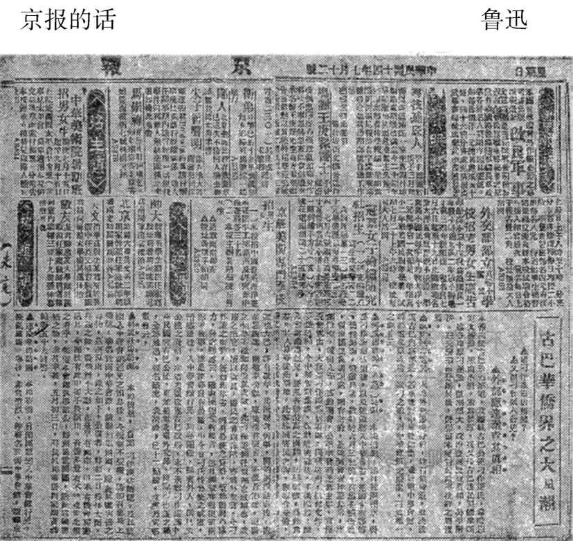

“愚兄”呀！我还没有将我的模范文教给你，你居然先已发明了么？你不能暂停“害群”的事业，自己做一点么？你竟如此偷懒么？你一定要我用“教鞭”么？？！！
七，一五
注 释
[510] 1925年7月13日许广平致鲁迅信中，附寄署名景宋的《罗素的话》一文。文中除首尾部分是作者的话外，都是大段摘抄罗素的话。为此鲁迅信手剪下7月12日《京报》一方贴于信笺，并在其前加《京报的话》的题目，署名鲁迅，剪报末附以如上的几句话。
250715 致许广平
第11卷 · 一九二五年

“愚兄”呀！我还没有将我的模范文教给你，你居然先已发明了么？你不能暂停“害群”的事业，自己做一点么？你竟如此偷懒么？你一定要我用“教鞭”么？？！！
七，一五
注 释
[510] 1925年7月13日许广平致鲁迅信中，附寄署名景宋的《罗素的话》一文。文中除首尾部分是作者的话外，都是大段摘抄罗素的话。为此鲁迅信手剪下7月12日《京报》一方贴于信笺，并在其前加《京报的话》的题目，署名鲁迅，剪报末附以如上的几句话。
云端书架：登录后可收藏本篇